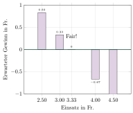

Aufgabe 6.2
A zahlt 5 Franken Spieleinsatz bei gerader Augenzahl zahlt B den Betrag dieser Zahl aus, sonst das Doppelte.
Ist das Spiel fair?
- Ein Spiel ist fair, wenn der Erwartungswert der Auszahlung dem Einsatz entspricht
- Beziehen Sie sich auf das Glücksrad aus Aufgabe 6.1
- Berechnen Sie den Erwartungswert mit $E[X] = \sum_{k} k \cdot P(X=k)$
- Vergleichen Sie den Erwartungswert mit einem möglichen Einsatz
Bezug zur vorherigen Aufgabe:
Das Spiel bezieht sich auf das Glücksrad aus Aufgabe 6.1 mit der Zufallsgrösse $X$ = Ziffernsumme nach zweimaligem Drehen.
Aus Aufgabe 6.1 kennen wir die Verteilung:
| $k$ | 2 | 3 | 4 | 5 | 6 |
| $P(X=k)$ | $\frac{1}{4}$ | $\frac{1}{3}$ | $\frac{5}{18}$ | $\frac{1}{9}$ | $\frac{1}{36}$ |
Berechnung des Erwartungswerts:
Der Erwartungswert berechnet sich als gewichtetes Mittel aller möglichen Ausgänge:
\begin{align*} E[X] &= \sum_{k} k \cdot P(X=k)\\ &= 2 \cdot \frac{1}{4} + 3 \cdot \frac{1}{3} + 4 \cdot \frac{5}{18} + 5 \cdot \frac{1}{9} + 6 \cdot \frac{1}{36}\\ &= \frac{2}{4} + \frac{3}{3} + \frac{20}{18} + \frac{5}{9} + \frac{6}{36}\\ &= \frac{1}{2} + 1 + \frac{10}{9} + \frac{5}{9} + \frac{1}{6} \end{align*}
Bringen wir alles auf den gemeinsamen Nenner 18: \begin{align*} E[X] &= \frac{9}{18} + \frac{18}{18} + \frac{20}{18} + \frac{10}{18} + \frac{3}{18}\\ &= \frac{9 + 18 + 20 + 10 + 3}{18} = \frac{60}{18} = \frac{10}{3} = 3\frac{1}{3} \end{align*}
Visualisierung der Fairness:
Die folgende Grafik zeigt den erwarteten Gewinn (Auszahlung minus Einsatz) für verschiedene Einsätze:

Erklärung der Visualisierung:
- Die Balken zeigen den erwarteten Gewinn für verschiedene Einsätze
- Bei Einsätzen unter 3.33 Fr. ist der erwartete Gewinn positiv (Spieler gewinnt langfristig)
- Bei Einsätzen über 3.33 Fr. ist der erwartete Gewinn negativ (Spieler verliert langfristig)
- Die grüne Linie bei Gewinn = 0 markiert die Fairness-Grenze
- Bei genau 3.33 Fr. Einsatz ist der erwartete Gewinn null – das Spiel ist fair
Interpretation der Fairness:
Der Erwartungswert beträgt $E[X] = \frac{10}{3} \approx 3.33$ Einheiten.
Das Spiel ist fair, wenn:
- Die Auszahlung der Ziffernsumme entspricht (2 bis 6 Einheiten)
- Der Einsatz genau $\frac{10}{3}$ Einheiten beträgt
Bei diesem Einsatz gilt: $$E[\text{Gewinn}] = E[\text{Auszahlung}] - \text{Einsatz} = \frac{10}{3} - \frac{10}{3} = 0$$
Verschiedene Fairness-Konzepte:
- Mathematische Fairness: $E[\text{Gewinn}] = 0$ für beide Spieler
- Symmetrische Fairness: Beide Spieler haben gleiche Chancen
- Subjektive Fairness: Spieler empfinden das Spiel als gerecht
In unserem Fall liegt mathematische Fairness vor bei einem Einsatz von 3.33 Fr.
Fazit:
Ja, das Spiel ist fair, wenn der Einsatz genau dem Erwartungswert der Auszahlung entspricht. Bei einem Einsatz von 3.33 Einheiten hat langfristig weder der Spieler noch der Veranstalter einen Vorteil.
Im Video: Etappe 4 · Erwartungswert bei 7:22